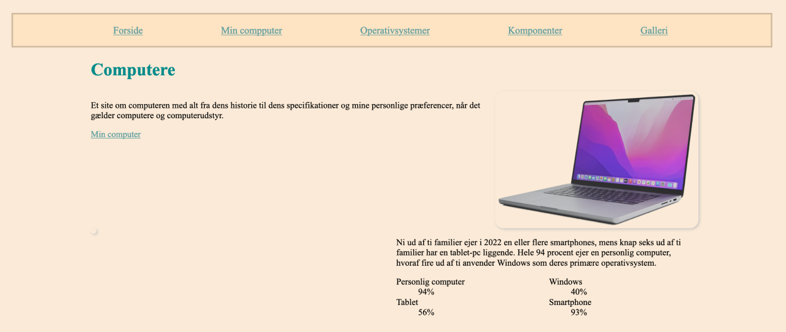
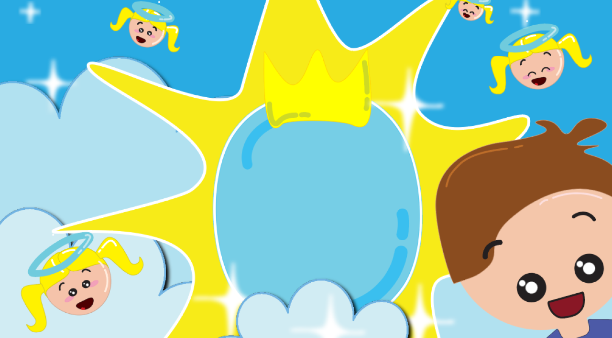
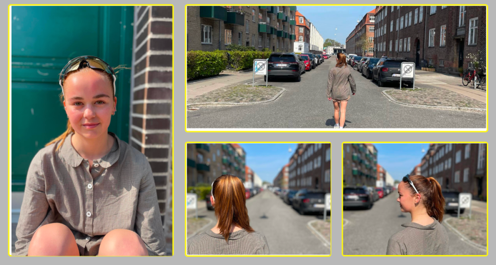

Tema 2 giver en grundlæggende introduktion til de mest anvendte værktøjer i en multimediedesigners værktøjskasse. Disse værktøjer danner fundamentet for resten af din uddannelse på MMD.
TEMA 2 - Grundlæggende web

TEMA 3 - Grundlæggende UX/UI

I dette tema skulle jeg begynder at arbejde professionelt med formgivning af grafiske elementer. Det var en forudsætning at have installeret Adobe Illustrator inde temaets start.
TEMA 4 - Grundlæggende animation

På dette tema lægger jeg vægt på at begynde at arbejde professionelt med design af grafiske elementer. Jeg analyserer spildesign og ser på, hvordan man engagerer brugeren gennem teori og konventioner inden for UI-elementer, figurelementer, baggrundsdesign og kompositionsteknikker.
TEMA 5 - Grundlæggende indhold

Passion Site
Jeg skal producere indhold og udvikle et simpelt site om en person med en passion. Formålet med denne opgave er, at jeg lærer at planlægge, producere og efterbehandle forskellige indholdstyper med programmer fra Adobe CC.

Virksomheds site
Vi skal i dette tema prøve kræfter med et redesign af en selvvalgt virksomheds website. Redesignet skal munde ud i et kodet website og indeholde indholdsproduktioner i form af for eksempel tekst, foto, LottieFiles og video. Dette er et gruppeprojekt, så vi skal løbende dokumentere vores design- og udviklingsproces.